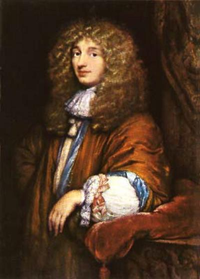

Eratóstenes
|
Numa época em que a maioria das pessoas pensava que o mundo era plano, o matemático, astrônomo e geógrafo grego Eratóstenes (276 aC -195 aC) usou o sol (na verdade, as sombras que ele causa) para medir o tamanho da Terra e concluir que ela era redonda. Sua medida (39.690 km) estava apenas 340 km errada em relação à verdadeira medição. |
Ptolomeu
|
O antigo astrônomo e matemático grego Cláudio Ptolomeu (90 dC – 168 dc) criou um modelo do sistema solar em que o sol, as estrelas e outros planetas giravam em torno da Terra. Conhecido como o sistema de Ptolomeu, foi reconhecido como o correto por centenas de anos, embora estivesse errado. Ainda assim, esse grande cientista foi considerado o primeiro “cientista celeste” e tem colaborações em matemática, astrologia, astronomia, geografia, cartografia, óptica e teoria musical. Sua obra mais conhecida é o Almagesto (que significa “O grande tratado”), um tratado de astronomia que reúne os trabalhos e observações de Aristóteles, Hiparco, Posidônio e outros, com tabelas de observações de estrelas e planetas e com um grande modelo geométrico do sistema solar, baseado na cosmologia aristotélica. |
Abd al-Rahman al-Sufi
|
O astrônomo persa Abd al-Rahman al-Sufi (903 dc – 986 dc), ou Azophi para os ocidentais, fez a primeira observação conhecida de um grupo de estrelas fora da Via Láctea, a galáxia de Andrômeda. Sua obra o “Livro das Estrelas Fixas” permitiu à astronomia moderna fazer comparações úteis na pesquisa das variações do brilho das estrelas. |
Copérnico
|
No século 16, na Polônia, o astrônomo Nicolau Copérnico (1473 – 1543) propôs um modelo do sistema solar em que a Terra girava ao redor do sol. O modelo não era totalmente correto, já que os astrônomos da época ainda tinham dificuldade em determinar a órbita de Marte, mas acabou mudando completamente a nossa visão do sistema solar. O pai da astronomia moderna revolucionou o pensamento ocidental ao tirar o homem do centro do universo (antropocentrismo), e por isso foi considerado um herege pela Igreja. |
Kepler
|
Usando medições detalhadas do caminho dos planetas feitas pelo astrônomo dinamarquês Tycho Brahe, Johannes Kepler (1571 – 1630) determinou que os planetas viajavam ao redor do sol em elipses, não círculos. Para chegar a essa descoberta, ele calculou três leis que envolvem os movimentos dos planetas, que os astrônomos usam em seus próprios cálculos até hoje. Kepler agora é o nome de uma sonda, um observatório espacial projetado pela NASA que procura planetas extrassolares. |
Galileu
|
Nascido na Itália, Galileu Galilei (1564 – 1642) é muitas vezes creditado com a criação do telescópio óptico, embora na verdade ele tenha apenas melhorado modelos existentes. O astrônomo, físico, matemático e filósofo usou a nova ferramenta de observação para descobrir as quatro luas principais de Júpiter (hoje conhecidas como luas de Galileu), bem como os anéis de Saturno. E, apesar de um modelo da Terra girando em volta do sol ter sido primeiramente proposto por Copérnico, levou algum tempo para a teoria ser amplamente aceita, e Galileu é mais conhecido por defendê-la. Galileu acabou sob prisão domiciliar no final de sua vida por causa disso. |
Christiaan Huygens
|  |
O físico e astrônomo holandês Christiaan Huygens (1629 – 1695) propôs a primeira teoria sobre a natureza da luz, um fenômeno que intriga cientistas há centenas de anos. Suas melhorias no telescópio lhe permitiram fazer as primeiras observações dos anéis de Saturno e descobrir sua lua Titã. Huygens também criou a teoria sobre o estudo da luz e cores descobrindo que, por meio da luz, seria possível a ocorrência de fenômenos de propagação como refração e reflexão. |
Newton
|
Com base no trabalho de quem veio antes dele, o astrônomo inglês Sir Isaac Newton (1643 – 1727) é mais famoso por seu trabalho sobre forças, especificamente a gravidade (quem lembra da história da maçã?). Ele calculou três leis que descrevem o movimento das forças entre objetos, conhecidas hoje como leis de Newton. |
Einstein

|
No início do século 20, o físico alemão Albert Einstein (1879 – 1955) tornou-se de um dos mais famosos cientistas do mundo, depois de propor uma nova maneira de olhar para o universo além da compreensão atual. Einstein sugeriu que as leis da física são as mesmas em todo o universo, que a velocidade da luz no vácuo é constante, e que o espaço e o tempo estão ligados em uma entidade conhecida como espaço-tempo, que é distorcida pela gravidade. |
Hubble

|
O astrônomo americano Edwin Hubble (1899 – 1953) calculou que uma bolha pequena no céu existia fora da Via Láctea. Antes de suas observações, a discussão sobre o tamanho do universo era dividida quanto à possibilidade ou não de existir apenas uma galáxia. Hubble determinou também que o universo estava se expandindo, um cálculo que mais tarde ficou conhecido como lei de Hubble. Suas observações de várias galáxias levaram a criação de um sistema padrão de classificação usado até hoje. Um dos telescópios espaciais mais famosos do mundo leva seu nome, o Telescópio Espacial Hubble, apontado para o céu com o objetivo de estudar o universo. |
Hawking

|
Stephen Hawking (nascido em 1942) fez muitas descobertas significativas no campo da cosmologia. Ele propôs que, como o universo tem um começo, provavelmente também terá um fim. Hawking acredita que o mundo não tem nenhum limite ou fronteira. Apesar de ser visto como uma das mentes mais brilhantes desde Einstein, muitos dos livros de Hawking são adaptados e direcionados para o público em geral, já que ele procura educar as pessoas sobre o universo. |
Cassini
|
O astrônomo italiano Giovanni Cassini (1625 – 1712) mediu o tempo que leva para os planetas Júpiter e Marte girarem, além de descobrir quatro luas de Saturno e as diferenças nos anéis do planeta. Quando a NASA lançou um satélite para orbitar Saturno e suas luas em 1997, ele foi apropriadamente chamado de Cassini. |
|
Edmond Halley (1656 – 1742) foi o cientista britânico que analisou os avistamentos de cometas históricos e propôs que o cometa que apareceu em 1456, 1531, 1607 e 1682 era o mesmo, e que voltaria em 1758. Apesar de ter morrido antes de poder dizer “eu estava certo!”, ele estava mesmo certo, e o cometa foi nomeado em sua honra. |
Messier
|
O astrônomo francês Charles Messier (1730 – 1817) compôs uma base de dados de objetos celestes conhecidos na época como “nebulosas”, que incluía 103 objetos em sua publicação final, embora outros tivessem sido adicionados com base em suas anotações pessoais. Muitos desses objetos são frequentemente listados com o nome do catálogo de Messier, como a Galáxia de Andrômeda, conhecida como M31 (M de Messier, 31 porque é o 31º objeto catalogado). O astrônomo também descobriu 13 cometas ao longo de sua vida. |
Herschel
|
O astrônomo britânico William Herschel (1738 – 1822) catalogou mais de 2.500 objetos do céu profundo. Ele também descobriu Urano e suas duas luas mais brilhantes, duas das luas de Saturno e as calotas polares marcianas. William treinou sua irmã, Caroline Herschel (1750 – 1848), em astronomia, e ela se tornou a primeira mulher a descobrir um cometa, identificando vários outros ao longo de sua vida. A Agência Espacial Europeia criou um observatório com seu nome, o Observatório Espacial Herschel. |
Henrietta Leavitt Swann
|
Henrietta Leavitt Swann (1868 – 1921) foi uma das várias mulheres que trabalharam como um “computador humano” na Universidade de Harvard (EUA), identificando imagens de estrelas variáveis em placas fotográficas. Ela descobriu que o brilho de uma estrela piscando estava relacionado com a frequência com que pulsava. Esta relação permitiu aos astrônomos calcularem as distâncias de estrelas e galáxias, o tamanho da Via Láctea e a expansão do universo. Ela descobriu mais de 1.200 estrelas variáveis em sua vida. |
Shapley
|
O astrônomo americano Harlow Shapley (1885 – 1972) calculou o tamanho da galáxia Via Láctea e sua localização geral do seu centro. Ele argumentou que os objetos conhecidos como “nebulosas” estavam dentro da galáxia, ao invés de fora dela. Porém, seu nome é um pouco manchado por ele ter discordado incorretamente das observações de Hubble de que o universo tinha outras galáxias além da Via Láctea. |
Drake
|
Frank Drake (nascido em 1930) é um dos pioneiros na busca de inteligência extraterrestre. Ele foi um dos fundadores da Busca por Inteligência Extraterrestre (SETI, na sigla em inglês) e idealizador da equação de Drake, uma equação matemática usada para estimar o número de civilizações extraterrestres na Via Láctea capazes de serem detectadas. |
Hartmann
|
O astrônomo americano William K. Hartmann (nascido em 1939) estendeu a teoria mais aceita sobre a formação da lua em 1975. Ele propôs que, após uma colisão com um grande corpo, os detritos que saíram da Terra se uniram para formar a lua. |
Carl Sagan

|
O astrônomo americano Carl Sagan (1934 – 1996) pode não ter sido um grande cientista em comparação com outros dessa lista, mas é um dos mais famosos astrônomos por ter feito importantes estudos científicos nas áreas de ciência planetária, e principalmente por ter popularizado a astronomia mais do que qualquer outro indivíduo. Seus programas de TV e derivados atraíam muitos telespectadores interessados. |
Astronomia no Brasil